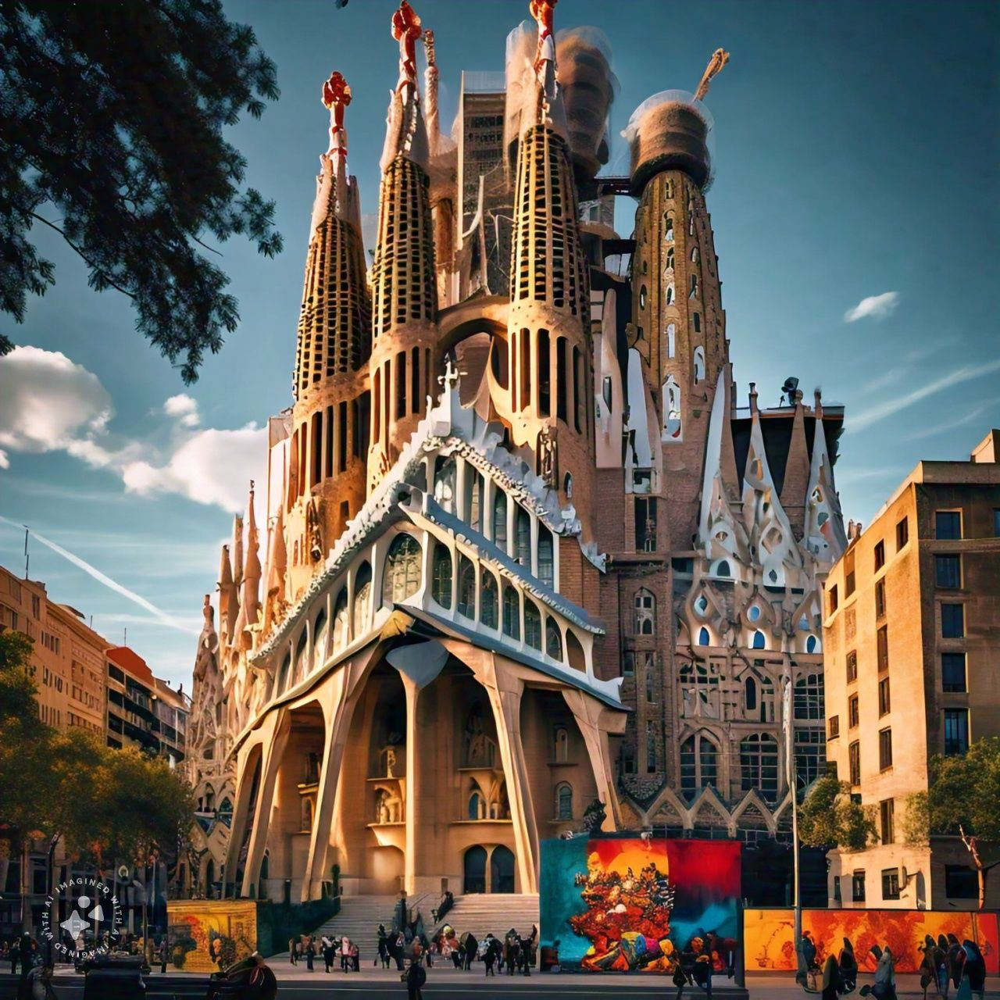
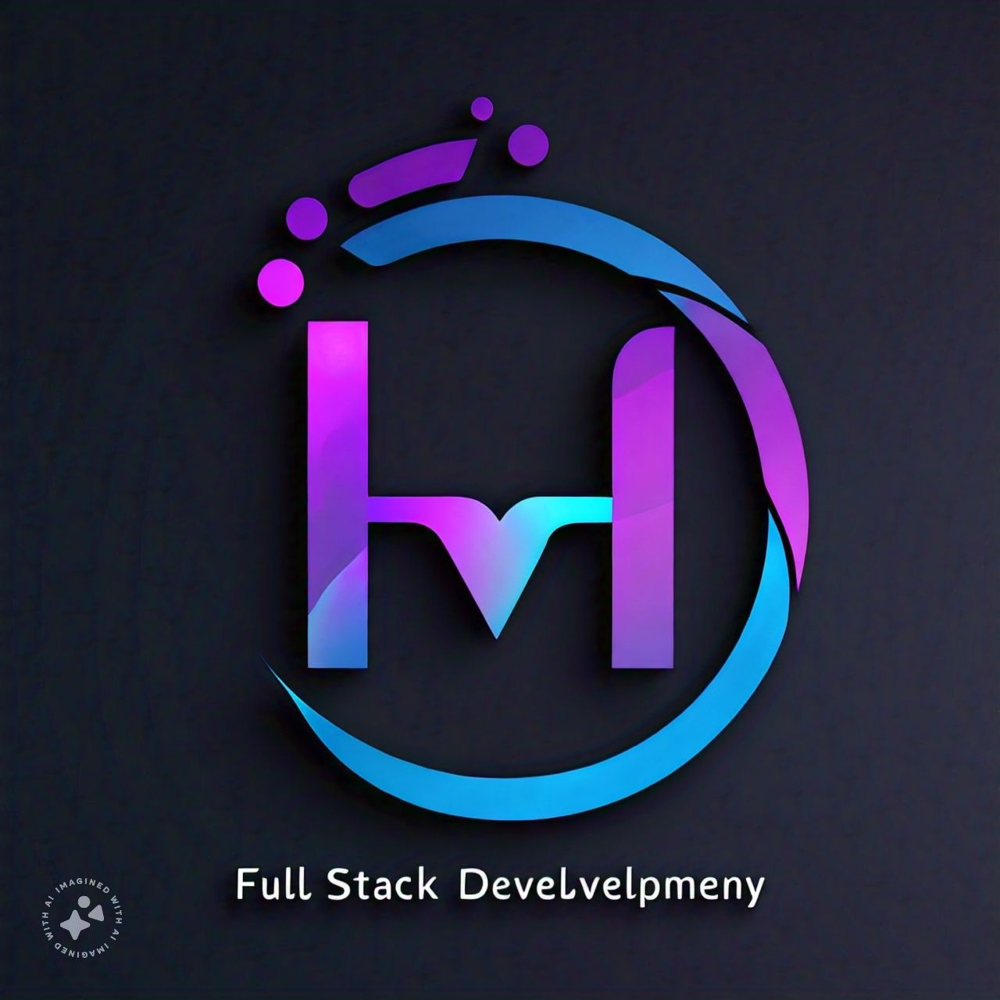

Luvuyo Bheki Ndlovu
Barcelona
Barcelona, the capital city of Catalonia, is a vibrant city with a rich history and culture. It's home to the Sagrada Familia cathedral, designed by Antoni Gaudi, which has been under construction for over 130 years. The city has a unique language Catalan, and a thriving beach culture with 4.5 kilometers of urban beaches. Barcelona is famous for its modernist architecture, including iconic landmarks like Casa Batllo and Park Guell, also designed by Gaudi. The city hosts the famous La Merce festival and is the capital of the autonomous community of Catalonia. Barcelona has a vibrant food scene, with popular dishes like paella and tapas, is home to the world-renowned Barcelona Pavilion and La Boqueria market. With its unique blend of history, culture, and modernity, Barcelona is a fascinating destination.
Spanish Language
I would like to learn Spanish because I'm fascinated by the rich culture and history of Spanish-speaking countries. Additionally, learning Spanish can open up new opportunities for travel, communication, and personal growth.
| Spanish Language | English Language |
|---|---|
| Hola, como estas? | Hi! How are you? |
| Como te llamas? | What is your name? |
| Que estas haciendo? | What are you doing? |
| Cuantos anos tienes? | How old are you? |
FAVOURITE SUBJECTS IN UJ-ACCENTURE 4IR WRP
Completed Bachelor of Science in Mathematics and Statistics at the University of KwaZulu-Natal.
4IR TECHNOLOGIES BOOTCAMP
4IR Bootcamp Technologies course is a training program that teaches individuals the essential skills and technologies needed to thrive in the Fourth Industrial Revolution (4IR). This course covers a range of cutting-edge topics, including Artificial Intelligence (AI), Machine Learning (ML), Internet of Things (IoT), Blockchain, Cloud Computing, Cybersecurity, and Data Science. Through hands-on training and projects, participants learn to design, develop, and deploy innovative solutions that combine physical and digital technologies, preparing them for exciting career opportunities in this rapidly evolving landscape.

FULLSTACK WEB DEVELOPMENT FOR 4IR
Full stack web development for 4IR means building websites and applications that combine physical and digital technologies, like sensors and AI, to create interactive and smart experiences. It involves designing and developing the front-end (what users see and interact with), the back-end (the server and database that store and manage data), and the middleware (the connection between the physical and digital worlds). This requires knowledge of various programming languages, frameworks, and tools, such as HTML, CSS, JavaScript, and AI/ML libraries, to create seamless and efficient interactions between humans, machines, and data.
BUSINESS ENGINEERING SYSTEMS FOR 4IR
Business Engineering Systems for 4IR refer to the integration of technology, people, and processes to create innovative and efficient solutions for businesses in the Fourth Industrial Revolution. It involves analyzing and improving business operations, supply chains, and customer experiences by leveraging cutting-edge technologies like Artificial Intelligence, Internet of Things, and Blockchain. This fusion of business and technology enables companies to adapt quickly to changing market conditions, make data-driven decisions, and drive growth and competitiveness in a rapidly evolving digital landscape.

Johannesburg Historical Places
Gold Reef City
Gold Reef City is a popular tourist destination in Johannesburg, South Africa. It's built on an old gold mine that closed in 1975. The park offers a thrilling experience with roller coasters, water rides, and other attractions. You can also take a guided tour of the mine, learning about the history of gold mining and even getting to pan for gold yourself. The park has a museum showcasing South Africa's history and a reconstruction of a 19th-century gold mining village. Visitors can also watch live performances like traditional dancing and music. With its unique blend of history, adventure, and entertainment, Gold Reef City is a must-visit destination for everyone traveling to Johannesburg.

Mandela House

Mandela House is a special place in Soweto, Johannesburg. It was the home of Nelson Mandela, a famous leader who fought against apartheid and became the first black president of South Africa. He lived there with his family from 1946 to 1962, before he was sent to prison for 27 years. The house is now a museum, showing how the Mandela family lived and what life was like during apartheid. You can see Mandela's old bedroom, the kitchen, and even the original furniture. The house has been kept the same as it was when Mandela lived there, so it feels like stepping back in time. It's a powerful and moving place to visit, reminding us of the struggles of the past and the importance of fighting for equality and freedom.
Constitutional Hill
Constitutional Hill in Johannesburg is a historic site that has played a significant role in South Africa's journey towards democracy. Once a fort and prison, it held notable figures like Mahatma Gandhi and Nelson Mandela, who were both imprisoned there for fighting against injustice. The hill is now home to the Constitutional Court, the highest court in the land, which was built on the site of the old prison. The court's design incorporates elements of the old prison, symbolizing the transformation from oppression to freedom. The hill also features the Mandela Cell, a museum showcasing the former president's cell and personal belongings. Additionally, the site includes the Women's Gaol, where many female activists were held, and Old Fort, which dates back to 1892. Today, Constitutional Hill serves as a powerful symbol of South Africa's transition to democracy and a beacon of hope for human rights.